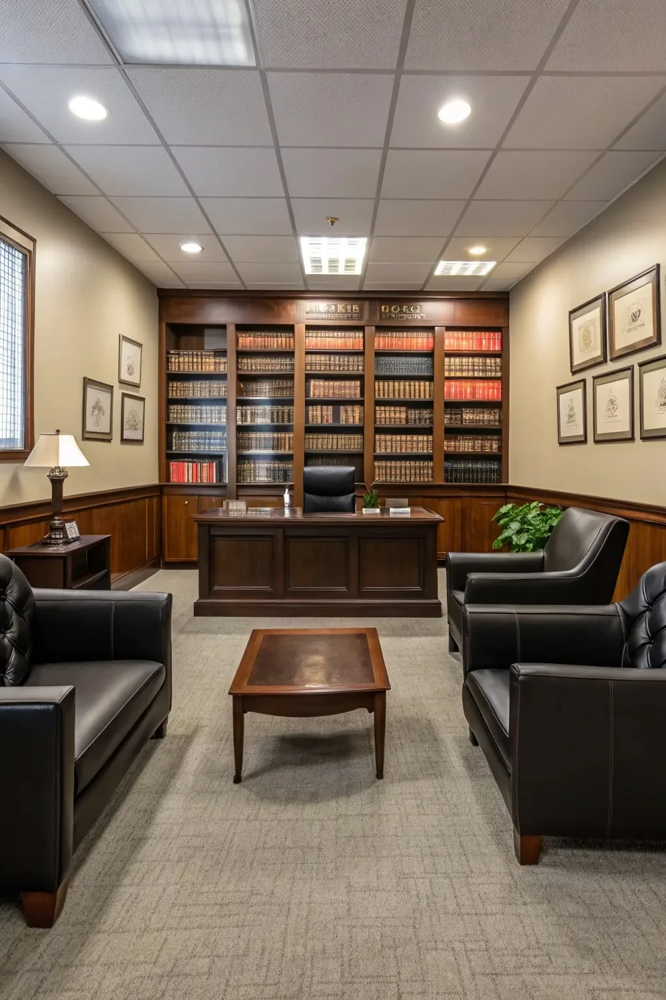

Procesos laborales
Acompañamiento informativo en controversias, derechos y procedimientos derivados de las relaciones de trabajo.
Consultar área ↗Una propuesta de asesoría jurídica que combina escucha, criterio y comunicación clara. Porque cada decisión importante merece una orientación a su altura.
Una visión más humana de la asesoría jurídica.
Imaginamos Nexo Legal como un espacio donde las personas y las empresas encuentran información comprensible, atención cuidadosa y una ruta de acción definida. Un despacho moderno no solo conoce las normas: sabe escuchar y comunicar.
Conoce nuestro enfoque ↗Una selección de áreas jurídicas de muestra, inspirada en tus referencias, presentada con lenguaje claro y cercano.
Acompañamiento informativo en controversias, derechos y procedimientos derivados de las relaciones de trabajo.
Consultar área ↗Orientación sobre trámites, actuaciones y controversias ante autoridades administrativas.
Consultar área ↗Apoyo conceptual para preparar y dar seguimiento a solicitudes formales ante las entidades correspondientes.
Consultar área ↗Información sobre mecanismos de protección de derechos fundamentales en las jurisdicciones donde existen.
Consultar área ↗Revisión y organización documental para identificar periodos, aportaciones y antecedentes laborales.
Consultar área ↗Orientación sobre requisitos y gestiones para solicitar devoluciones ante entidades competentes.
Consultar área ↗Presentación informativa de asesoría relativa a prestaciones e indemnizaciones legalmente aplicables.
Consultar área ↗Acompañamiento conceptual en trámites, solicitudes y reclamaciones relacionadas con pensiones.
Consultar área ↗Áreas de práctica presentadas únicamente como ejemplo de contenido para una web jurídica. No constituye oferta de servicios legales.
La buena orientación comienza con preguntas adecuadas, objetivos definidos y una explicación honesta de las alternativas.
Una presentación ilustrativa del equipo profesional para visualizar cómo destacaría un despacho sus perfiles.
Relaciones laborales y orientación en procedimientos.
Gestiones, solicitudes y procedimientos administrativos.
Trámites, documentación e información sobre pensiones.
Las fotografías son ilustraciones generadas para esta demo. Los perfiles no corresponden a abogados reales ni acreditan ejercicio profesional.
Una identidad visual cálida, elegante y profesional. Así podría presentarse digitalmente un despacho jurídico contemporáneo.

Las decisiones legales no deberían sentirse como un laberinto. La claridad también es una forma de confianza.
NL /Cuéntanos qué necesitas. Esta sección ilustra cómo un despacho podría facilitar el contacto desde su página web.
Este correo pertenece a Dorenio, creador de la demostración. No es un canal de asesoría jurídica.
Contacto de demostración
+00 000 000 0000Número ficticio. Antes de publicar deberá sustituirse por el número real del despacho.Ver otros medios de contacto ↗